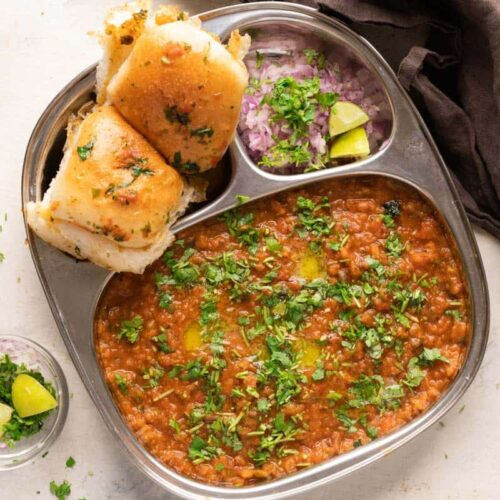

Home
Pav Bhaji Recipe(Mumbai Street Style)
Pav Bhaji is a beloved Indian street food dish that originated in Mumbai but has gained popularity across the country and beyond.Pav Bhaji originated in Mumbai, India, in the mid-19th century, primarily as a quick and filling meal option for textile mill workers.
The dish evolved from the need to provide a nutritious and affordable meal that could be prepared and consumed quickly during short lunch breaks.
Over time, Pav Bhaji became a staple street food item in Mumbai and eventually spread to other parts of India and the world.

My Recipe
Ingredients needed:
For the Bhaji (Vegetables Mash):
- 2 large potatoes, boiled and mashed
- 1 cup cauliflower, finely chopped
- 1/2 cup green peas, boiled
- 1/2 cup carrots, finely chopped
- 1/2 cup bell peppers (capsicum), finely chopped
- 1/2 cup tomatoes, finely chopped
- 1 large onion, finely chopped
- 2-3 green chilies, finely chopped
- 4 cloves garlic, minced
- 1-inch piece ginger, minced
- 2 tablespoons butter
- 2 tablespoons oil
- 2 tablespoons pav bhaji masala
- 1 teaspoon red chili powder (adjust to taste)
- 1/2 teaspoon turmeric powder
- Salt to taste
- 1 tablespoon lemon juice
- Fresh coriander leaves, chopped for garnish
For Serving:
- Pav (dinner rolls) - buttered and lightly toasted
- Finely chopped onions
- Lemon wedges
- Butter for garnish
Instructions
- Heat oil and butter in a large pan or kadhai over medium heat. Add minced garlic and ginger. Sauté until aromatic.
- Add chopped onions and green chilies. Sauté until onions turn translucent.
- Add chopped bell peppers, carrots, and cauliflower. Cook until vegetables are soft and tender.
- Add chopped tomatoes and cook until they turn mushy and oil starts to separate.
- Add mashed potatoes and boiled green peas to the pan. Mix well.
- Add pav bhaji masala, red chili powder, turmeric powder, and salt. Mix everything thoroughly, mashing the vegetables with the back of the spoon or a potato masher.
- Add water as needed to adjust the consistency of the bhaji. Simmer for 10-15 minutes, stirring occasionally, until the flavors are well combined.
- Once the bhaji is cooked and reaches the desired consistency, add lemon juice and mix well.
- Garnish with chopped coriander leaves and a dollop of butter.
- For serving, lightly toast the pav (dinner rolls) with butter on a hot griddle.
- Serve the hot pav bhaji with buttered pav, finely chopped onions, lemon wedges, and additional butter on the side.